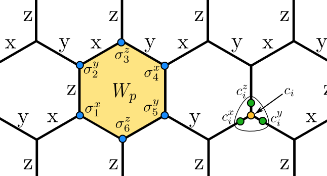
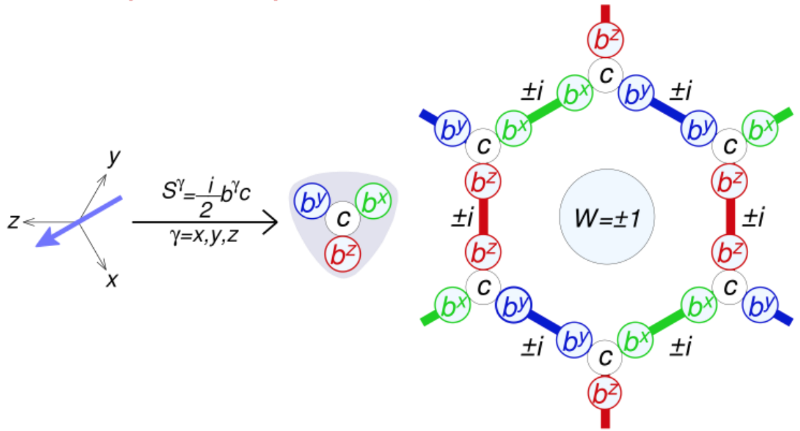
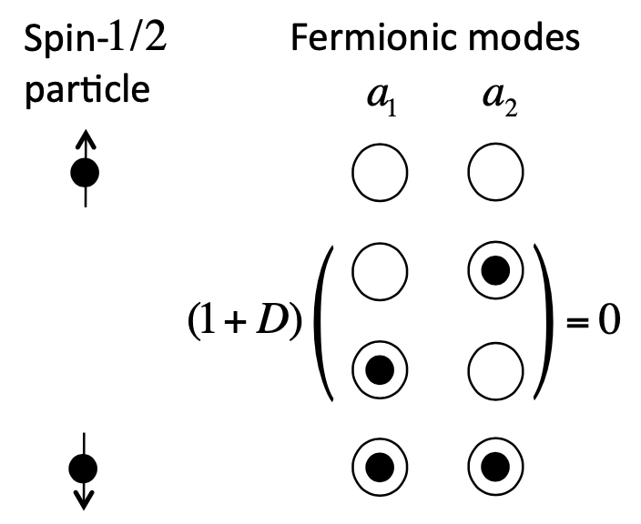
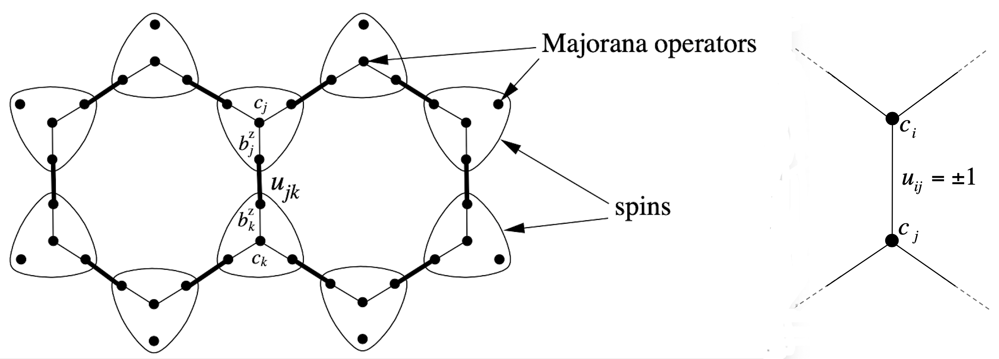
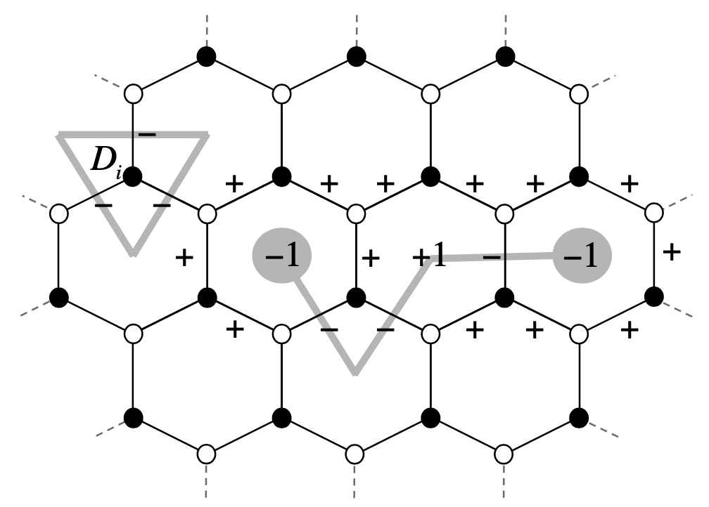
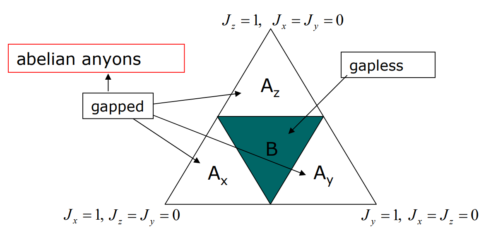

Kitaev Honeycomb Model (I)
The Kitaev honeycomb model is an exactly solvable model, which demonstrates the properties of a spin liquid state, specifically the topological nature and the presence of anyonic excitations. It also has been proposed as a possible platform for fault-tolerant quantum computation, due to its topological nature and the presence of anyonic excitations. The model consists of a honeycomb lattice with a spin-\(1/2\) particle sitting on each of its vertices. There are three types of links and we label them as \(x\), \(y\) and \(z\), as showed in the figure.
|  |
|---|
| Kitaev honeycomb model and the "plaquette operator" \(W_p\) |
The spins interact with their nearest neighbors via three different types of links. Then the interaction can be written as \[ H=-J_x \sum_\text{x-links}\sigma_j^x\sigma_k^x -J_y \sum_\text{y-links}\sigma_j^y\sigma_k^y -J_z \sum_\text{z-links}\sigma_j^z\sigma_k^z \]
- The model is characterized by infinitely many local conserved quantities, the integrals of motion.
Plaquette Operator \(W_p\)
The "plaquette operator" \(W_p\) is defined individually around each hexagonal loop as \[W_p \equiv \sigma_1^x\sigma_2^y\sigma_3^z\sigma_4^x\sigma_5^y\sigma_6^z.\] Each spin component acts only at a vertex where the external bond is in the corresponding direction.
- Each \(W_p\) commute with Hamiltonian and with each other. Consequently, the \(W_p\)'s can be independently diagonalized with eigenvalues \(W_p=\pm 1\).
- The Hilbert space can thus be split into manifolds defined by different values of set \(\{W_p\}\).
- For “ferromagnetic” interactions \(J_{x,y,z}>0\), the ground state lies in the sector \(W_p=+1\) for \(\forall p\).
- We call the \(W_p=-1\) state a vortex and the \(W_p=+1\) state vortex free. The vortices display anyonic statistics (details in the below section).
- Degeneracy: Original Hilbert space: \(2^n\)-dimension (\(n\) is vertices number). d.o.f. of \(\{W_p\}\): \(n/2\), number of plaquettes. Hence each sector is \(2^{n/2}\)-dimensional degenerate.
Representing spins by Majorana fermions
|  |
|---|
| Representing Spins by Majorana Fermions |
As shown in the figure above, we mathematically replace the spin operator \(S^\gamma\) \((\gamma=x,y,z)\) by two types of Majorana operators \(b^\gamma\) and \(c\): \(S^\gamma=\frac{i}{2}b^{\gamma}c\). Here the Majorana operators satisfy the algebra \[ c^2=b_{\gamma}^2=1,\ \ \ \{b_i^\alpha,b_j^\beta \}=\{b_i^\alpha,c_j \}=0. \] In this new basis, we describe a spin by two fermionic modes, i.e., by four Majorana operators. A \(2\)-dimensional physical space is represented by a \(4\)-dimensional Fock space. So we have to impose a constraint \(D=b_j^xb_j^yb_j^zc_j=1\) at each site. This constraint is much clear in the fermion representation (we assume that there are two fermions living on each lattice site) \[ f_{i\uparrow}=\frac{b_i^z+ic_i}{2}, \qquad f_{i\downarrow}=\frac{b_i^x+ib_i^y}{2} \] then the constraint operator becomes \[ \begin{align} D =1 &=(1-2f_{i\downarrow}^\dagger f_{i\downarrow})(1-2f_{i\uparrow}^\dagger f_{i\uparrow}) \\ &= b_j^xb_j^yb_j^zc_j \end{align} \] Therefore, the constraint of fermions means that the single occupancies are projected out, only the vacuum and double occupancies are remained.
|  |
|---|
| Represent each spin with 2 fermionic modes. We choose the state with no fermions to be spin up and the state with two fermions to be spin down. Single occupancies are projected out of the physical Hilbert space by the operator \(D\). [2] |
The spin space is called physical space and Majorana space is called extended space. The operator \(D\) is used to determine whether any state \(|\psi\rangle\) is physical or not. \(|\psi\rangle\) is physical \(\leftrightarrow\) \(D|\psi\rangle=|\psi\rangle\) (\(D\) is also called the stabilizer). The Pauli operators \(\sigma^{x/y/z}\) in physical space can be represented by \(\tilde{\sigma}^\gamma = ib^{\gamma}c\) in Majorana space.
Hamiltonian in the Majorana representation
Each Hamiltonian term \(\sigma^\alpha_j \sigma^\alpha_k\) becomes \[ \sigma^\alpha_j \sigma^\alpha_k \to (ib^\alpha_j c_j)(ib^\alpha_k c_k) = -i (ib^\alpha_j b^\alpha_k) c_j c_k. \] here \(\hat{u}_{jk}=ib^\alpha_j b^\alpha_k\) is Hermitian, which we associate with the link \((j,k)\). Then the Hamiltonian would be \[ H=\frac{i}{4} \sum_{j,k} \hat{A}_{jk} c_j c_k \] with \(\hat{A}_{jk} = 2J_{\alpha_{jk}}\hat{u}_{jk}\) if \((j,k)\) are connected and \(\hat{A}_{jk}=0\) else.
|  |
|---|
| Graphic representation of Hamiltonian[1] |
- the bond operator \(\hat{u}_{jk}=-\hat{u}_{kj}\).
- the operator \(\hat{u}_{jk}\) commute with the Hamiltonian and with each other: \([\hat{u}_{ij},\hat{u}_{kl}]=0\), \([\hat{u}_{ij},H]=0\). So the Hilbert space is split into common eigenspaces of \(\hat{u}_{jk}\), indexed by the corresponding eigenvalues \(u_{jk}=\pm 1\).
- Fixing the eigenvalues \(u_{jk}=\pm 1\) for each link removes the \(b\) operators completely from the model. This step reduces the initial spin model to a honeycomb lattice model of tunnelling \(c\) Majorana fermions.
Emerging gauge field
The plaquette operator can be rewritten as \(W_p=\prod_{\langle ij \rangle \in \partial p}\hat{u}_{ij}\). These fluxes on the plaquette can be considered as an artificial magnetic field and \(u_{ij}\) represents the gauge field, because there are many different sets \(\{u_{ij}\}\) that give rise to the same flux sector. Therefore, we identify \(\hat{u}\) as a \(Z_2\) gauge field and \(W_p\) as the associated \(Z_2\) flux operator (magnetic flux through the plaquette \(p\)).
We note that the operators \(D_i\) and \(\hat{u}_{ij}\) do not commute, which means they don't have the common set of eigenstates. Hence, the sectors labeled by \(u_{jk}=\pm 1\) are not necessarily part of the physical space. Actually, they anti-commute with each other \[ \{ \hat{u}_{ij}, D_i \} = 0. \] Consequently, the application of the \(D_i\) operator to an eigenstate of \(\hat{u}_{ij}\) would invert the sign of link operators that connected to the site \(i\). For an initial state with \(u_{jk}=+1\) configuration as illustrated in the following figure, The application of \(D_i\) does not alter the physical plaquette operator \(W_p\), the system remains in the same vortex sector. In the right side of the figure, we show that two vortices are connected by an unphysical string passing through the link \((ij)\) with eigenvalues \(u_{ij}=-1\). Due to the anti-commutation of \(D_i\) and \(\hat{u}_{ij}\), the physical state is an equal amplitude superposition of all loops and strings compatible with the vortex sector \(W\).
|  |
|---|
| The application of a \(D_i\) operator at a site. And the unphysical string between two vortices. |
The gauge redundancy comes from the representation of the Majorana operators, which enlarged the Hilbert space and led to the emergence of a \(Z_2\) gauge field. Therefore, the system becomes a form in which non-interacting Majorana fermions are coupled to the \(Z_2\) gauge field, but the physical properties of the system depend only on the flux sector.
Diagonalization
We focus on the case where all \(u_{ij}=+1\), which corresponds to the absence of any vortices (that is the ground state). With a Fourier transformation \[ a_r = \sum_p e^{-i \mathrm{p}\cdot\mathrm{r}} a_p, \] here we use \(a\) and \(b\) to represent the Majorana fermions placing on the two sublattice. The Hamiltonian would have the form \[ \begin{align} H &= \frac{i}{4} \sum_\mathrm{p} f(\mathrm{p}) a_{-\mathrm{p}} b_\mathrm{p} +h.c. \\ &= \frac{i}{4} \sum_\mathrm{p} \left(2J\sum_{\alpha=1,2,3} e^{-i \mathrm{p}\cdot\mathrm{s}_\alpha} \right) a_{-\mathrm{p}} b_\mathrm{p} +h.c. \\ &= \frac{1}{4} \sum_{\mathbf{p}}\left(a_{\mathbf{p}}^{\dagger} \ \ \ b_{\mathbf{p}}^{\dagger}\right)\left(\begin{array}{cc} 0 & if(\mathbf{p}) \\ -if(\mathbf{p})^* & 0 \end{array}\right)\left(\begin{array}{l} a_{\mathbf{p}} \\ b_{\mathbf{p}} \end{array}\right) \end{align} \] Then the eigenvalues of \(H(\mathbf{p})\) are given by \[ \epsilon(\mathbf{p}) = \pm |f(\mathbf{p})| \]
Another method to diagonalize. Chen and Nussinov show that within the ground state sector \(W_p=\pm 1\), \(\forall p\), the Hamiltonian can be mapped to a 2D \(p\)-wave Fermi superfluid with Hamiltonian \[ \hat{H}=\sum_q \epsilon_q a_q^{\dagger} a_q+\frac{i \Delta_q}{2}\left(a_q^{\dagger} a_{-q}^{\dagger}+\text { H.c. }\right) \] where \[ \begin{aligned} & \epsilon_q \equiv 2 J_z-2 J_z \cos q_x-2 J_y \cos q_y \\ & \Delta_q \equiv 2 J_x \sin q_x+2 J_y \sin q_y \end{aligned} \] by the standard BCS procedure, then the quasiparticle excitation spectrum has the usual form \[ E_q=\sqrt{\epsilon_q^2+\Delta_q^2} \]
Ground state and phases
|  |
|---|
| Phase diagram |
Non-Abelian Anyons
Non-Abelian anyons are defined in terms of their non-trivial evolution under their position exchange. This evolution happens in the degenerate ground state of the system.
| Honeycomb Lattice | Ising Model | |
|---|---|---|
| Ground state | \(\leftrightarrow\) | \(1\), Vaccum |
| Vortex | \(\leftrightarrow\) | \(\sigma\), Non-Abelian Anyon |
| Fermionic excitation | \(\leftrightarrow\) | \(\psi\), Fermion |